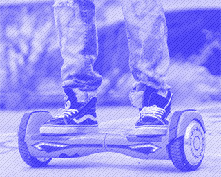
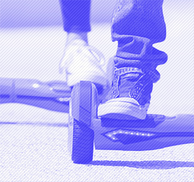
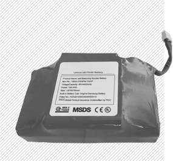
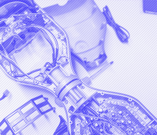
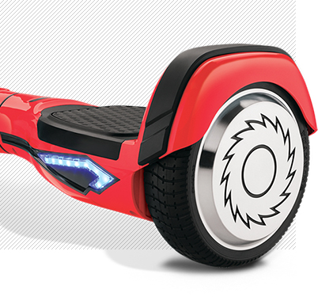
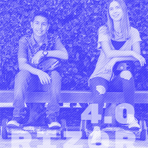

Cветодиодные индикаторы сообщают окружающим о запланированном повороте. Своим мерцанием они мгновенно реагируют на смещение центра тяжести в правую или левую сторону.
Как только ваше движение продолжится по прямой, мерцание прекратится, подсветка снова станет в виде сплошной линии.

Режимы
Помимо «умной» подсветки, Hovertrax 4.0 снабжён двумя скоростными режимами.
Один для продвинутых пользователей
Второй для новичков
Максимальная скорость
13 км/ч
Скоростных режима
2

Аккумулятор
Имеет съемную аккумуляторную батарею. Это позволяет легко вытащить сам АКБ и, к примеру,
перевезти весь гироборд в самолёте – это кстати единственный гироскутер, с которым проходит такой «трюк», да и есть документы,
подтверждающие лицензию на его производство и использование.
Запас хода
25 км
Время зарядки
2 ч

Электроника
При эксплуатации Rizor Hovertrax 4.0 нельзя не отметить плавность торможения и быстроту набора скорости.
В копилку «плюсов» нужно отнести и безупречную отзывчивость электронной начинки.
Бесшумный двигатель
Встроенный гироскоп

Характеристики

Rizor Hovertrax 4.0
Корпус
выполнен из прочного пластика, и имеет приятную LED подсветку, дополняющую общий дизайн. Платформы для ног покрыты антискользящим покрытием.
Колеса
Rizor Hovertrax 4.0 получил относительно ебольшие, но, в целом, среднего диаметра колёса в 6,5 дюймов.
Мощность
двигателя в 350 Вт обеспечивает комфортное и безопасное передвижение при максимальной скорости в 13 км/ч.
Вес
небольшой вес, приблизительно в 12 кг, позволяет относительно компактно переносить гироборд с собой.

Для кого
При максимально выдерживаемой нагрузке в 100 кг отлично подойдёт, как для подрастающего поколения,
так и для более взрослых «наездников».
Это единственный гироскутер со специальным детским режимом езды.